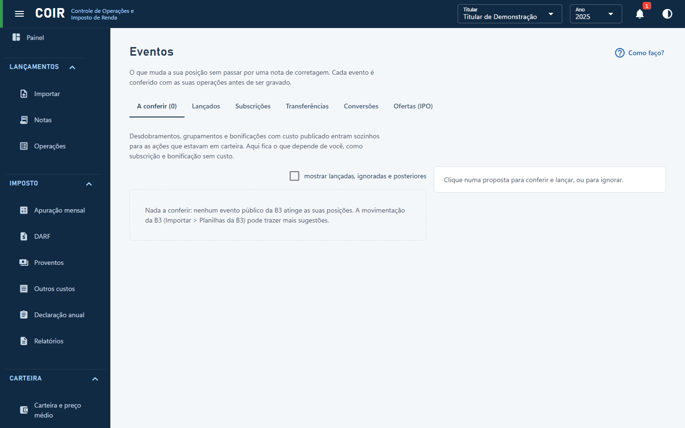

Eventos

O que muda a sua posição sem passar por uma nota de corretagem. Cada evento é conferido com as suas operações antes de ser gravado: se não fechar, ele não entra e a tela diz por quê.
A conferir
O que a B3 mostra e ainda não está no seu histórico, vindo das tabelas públicas da B3 e da movimentação importada.
Desdobramentos, grupamentos e bonificações com custo publicado pela companhia na CVM entram sozinhos para as ações que estavam em carteira na data, ao importar notas e ao abrir esta tela. A tela mostra quantos entraram, com Desfazer; o que você apagar não volta. Eventos depois da sua última nota ficam de fora até você importar as notas seguintes, porque o COIR não sabe se você ainda tinha o ativo.
Aqui fica o que depende de você:
- Uma a uma: clique numa proposta, confira os campos e use Gravar, ou Ignorar proposta se ela não vale para você. A movimentação da B3 traz a data do crédito; troque pela data ex (primeiro pregão sem o direito).
- De uma vez: Lançar as seguras só aparece se algum lançamento automático não tiver entrado, com o motivo na tela.
Ficam de fora das seguras o que pede algo seu (bonificação sem custo publicado, subscrição, cisão, incorporação), os ajustes de séries de opção, o evento que entrega outra classe da ação, e o grupamento muito forte, que costuma vir seguido de desdobramento no mesmo dia.
Lançados
Todos os eventos do titular. Clique num deles para corrigir ou excluir. Aqui também entram os que não têm aba própria: desdobramento, grupamento, bonificação, redução de capital e leilão de fração.
Subscrições
Ações novas que você decidiu comprar pelo direito de acionista. Informe a data, a conta, o ativo, as ações subscritas e o valor pago.
Transferências
Ativos que você levou de uma corretora para outra. Informe a data, a origem, o destino e o ativo. Deixe a quantidade vazia para mover toda a posição. Não muda o preço médio nem gera imposto.
Conversões
Quando um ativo vira outro: conversão de classe, incorporação, fusão, cisão ou ajuste de série de opção. Informe o ativo e a quantidade que saem e o ativo e a quantidade que entram. Na cisão, informe também o percentual do custo que está no aviso aos acionistas.
Ofertas (IPO)
Compras em IPO ou follow-on, que não aparecem em nota de corretagem. Informe a data da liquidação, a conta, o ativo, as ações compradas e o valor pago. A compra entra no preço médio como qualquer outra. Se você vendeu nos dias antes da liquidação, a compra entra no dia da venda, e o ganho fica no mês da venda. Ações de pequena ou média empresa (PME) da lista da B3 têm a isenção considerada.